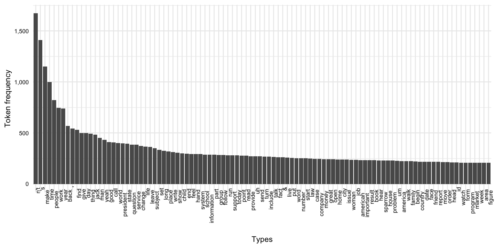
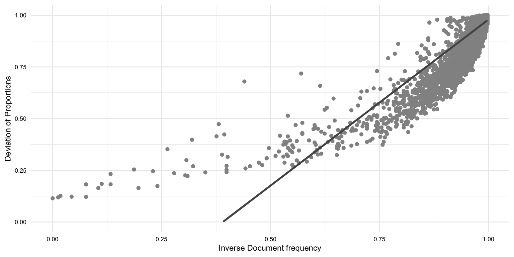
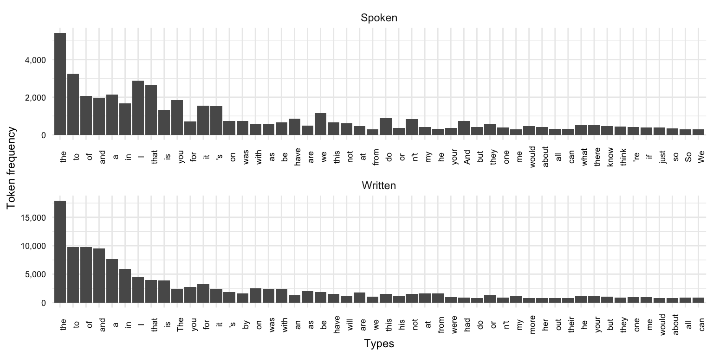

| variable | name | variable_type | description |
|---|---|---|---|
| doc_id | Document ID | numeric | Unique identifier for each document |
| description | Description | categorical | Description of the content of the document |
| modality | Modality | categorical | The form in which the document is presented (written or spoken) |
| genre | Genre | categorical | The category or type of the document |
| domain | Domain | categorical | The subject or field to which the document belongs |
| token_num | Token Number | numeric | Index number token per document |
| token | Token | categorical | Individual word forms in the document |
| lemma | Lemma | categorical | Base or dictionary form of the token |
| pos | Part of Speech | categorical | Grammatical category of the token (modified PENN Treebank tagset) |
8 Exploration
Caution
Under development.
The data speaks for itself, but only if we are willing to listen.
— Nate Silver
In this chapter, we examine a wide range of strategies for deriving insight from data in cases where the researcher does not start with a preconceived hypothesis or prediction, but rather the researcher aims to uncover patterns and associations from data allowing the data to guide the trajectory of the analysis. The chapter outlines two main branches of exploratory data analysis: 1) descriptive analysis which statistically and/ or visually summarizes a dataset and 2) unsupervised learning which is a machine learning approach that does not assume any particular relationship between variables in a dataset. Either through descriptive or unsupervised learning methods, exploratory data analysis employs quantitative methods to summarize, reduce, and sort complex datasets and statistically and visually interrogate a dataset in order to provide the researcher novel perspective to be qualitatively assessed.
8.1 Orientation
The aim of this section is to provide an overview of exploratory data analysis (EDA). We will delve into various descriptive methods, such as frequency analysis and co-occurrence analysis, which are fundamental tools in linguistic research. However, our exploration won’t stop there. We will also integrate modern exploratory methods from unsupervised learning approaches, including clustering, topic modeling, and vector space modeling. This may sound overwhelming, but I will strive to keep explanations clear and concise, ensuring their practicality and relevance to your linguistic inquiries is apparent. To this end, we will provide real-world examples to exemplify the applicability of these methodologies.
8.1.1 Research goal
As discussed in Section 3.2.1 and Section 4.3.1, the goal of exploratory data analysis is to discover, describe, and posit new hypotheses. The researcher does not start with a preconceived hypothesis or prediction, but rather the researcher aims to uncover patterns and associations from data allowing the data to guide the trajectory of the analysis. This analysis approach is best-suited for research where the literature on a research question is limited, or where the researcher is interested in exploring a new research question.
Since the researcher does not start with a preconceived hypothesis, the researcher is not able to test a hypothesis and generalize to a population, but rather the researcher is able to describe the data and provide a new perspective to be qualitatively assessed. This is achieved through an iterative and inductive process of data exploration, where the researcher uses quantitative methods to summarize, reduce, and sort complex datasets and statistically and visually interrogate a dataset letting the data guide the analysis.
8.1.2 Approach
The approach to exploratory data analysis is iterative and inductive. To reign in the analysis, however, it is important to have a research question to guide the analysis. The research question will often be broad and exploratory in nature, but it will provide a framework for the analysis including the unit of analysis and sometimes the units of observation. Yet the units of observation can be modified as needed to address the research question. Furthermore, the methods applied to the data can evolve as the research unfolds. The researcher may start with a descriptive analysis and then move to an unsupervised learning approach, or vice versa. The researcher may also pivot the approach to explore new questions and new variables. Ultimately, the researcher is guided by the data and the research question, but the researcher is not bound by a preconceived hypothesis or prediction.
With a research question and relevant data in hand, we can look to conduct the analysis. The workflow for exploratory data analysis is as follows:
- Identify and extract the variables of interest in the dataset
- Inspect the dataset to ensure the quality of the data and understand its characteristics
- Interrogate the dataset using descriptive analysis and/ or unsupervised learning
- Interpret the results of the analysis to determine if they are meaningful and if they provide a new perspective on the research question
- (Optional) Pivot and repeat steps 1-4 to explore new questions and new variables
Let’s elaborate on each of these steps. First, we want to consider our research question and identify the variables of potential interest to provide insight to our question. Starting with a transformed dataset means that much of the data preparation has already been done, but we may need to further transform the data, either up front or as we explore the data. In text analysis, this often includes identifying and extracting the linguistic variables of interest, such as words, \(n\)-grams, sentences, etc. Depending on the annotation scheme, other linguistic variables may be of interest, such as part-of-speech tags, syntactic dependencies, semantic roles, etc.
We may also want to consider the operational measures of the variables derived from the text, such as frequency, dispersion, co-occurrence, keyness, etc. We may also want to consider the other variables in the dataset that may be target for grouping or filtering the dataset, such as speaker information, document information, linguistic unit information, etc.
During or after extracting and operationalizing the variables of interest, we want to inspect the dataset to ensure the quality of the data and understand its characteristics. This may include checking for missing data, checking for outliers, checking for errors, checking for inconsistencies, etc. We may also want to inspect the distribution of the variables of interest to understand their characteristics. Summary statistics and visualizations, such as those covered in Section 3.1, are useful for inspecting the dataset and also provide a foundation for interrogating the dataset.
Once we have identified the variables of interest and inspected the dataset, we can interrogate the dataset using descriptive analysis and/ or unsupervised learning. Descriptive analysis is a set of methods that statistically and/ or visually summarizes a dataset. Descriptive analysis can be used to describe a dataset and to identify linguistic units (frequency analysis) or co-occuring (co-occurrence analysis) units that are distinctive to a particular group or sub-group in the dataset. Unsupervised learning is a machine learning approach that does not assume any particular relationship between variables in a dataset. It can be used to identify groupings (clustering) in the data including patterning of linguistic units, identifying semantically similar topics (topic modeling), and estimating word context relationships (vector space modeling).
Exploratory methods will produce a set of statistical and/ or visual results. The researcher must interpret these results to determine if they are meaningful and if they provide a new perspective on the research question. Many times the results from one method will lead to new questions which can be explored with other methods. In some cases, the results may not be meaningful and the researcher may need to return to the data preparation stage to modify the dataset or the variables of interest. As the aim of exploratory analysis is just that, to explore, the researcher can pivot the approach to explore new questions and new variables. Ultimately, what is meaningful is determined by the researcher in the light of the research question and the potential insight obtained from the results.
8.2 Analysis
In this section will discuss exploratory data analysis (EDA) for linguists, with a focus on descriptive methods such as frequency analysis and co-occurence analysis, as well as unsupervised learning approaches such as clustering, topic modelling, and word embedding. To ground the discussion, we will use the the Manually Annotated Sub-Corpus (MASC) of the American National Corpus. The data dictionary for the masc_transformed dataset is shown in Table 8.1.
We will work with the MASC as our dataset to approach a task, more than a question. The task will be to identify relevant materials for an English Language Learner (ELL) textbook. This will involve multiple research questions and allow us to illustrate some very fundamental concepts that will emerge across text analysis research.
First, I’ll read in the dataset and only keep the variables that will pertain to our task, dropping the description and domain variables, and preview the dataset in Example 8.1.
Example 8.1
# Read and subset the MASC dataset
masc_tbl <-
read_csv("../data/masc/masc_transformed.csv") |>
select(-description, -domain)
# Preview the MASC dataset
masc_tbl |>
slice_head(n = 5)> # A tibble: 5 × 7
> doc_id modality genre term_num term lemma pos
> <dbl> <chr> <chr> <dbl> <chr> <chr> <chr>
> 1 1 Written Letters 0 December december NNP
> 2 1 Written Letters 1 1998 1998 CD
> 3 1 Written Letters 2 Your your PRP$
> 4 1 Written Letters 3 contribution contribution NN
> 5 1 Written Letters 4 to to TOFrom the output in Example 8.1, we should note a couple of things. First the doc_id is treated as numeric <dbl> and it is not a quantitative variable –we should change this vector type to <chr>. Second, at some point in our analysis we may need to recode some of the character variables to factor variables as analysis methods may require this.
Example 8.2
# Change doc_id to character
masc_tbl <-
masc_tbl |>
mutate(doc_id = as.character(doc_id))To get a better sense of distribution of the dataset, let’s use skim() from the skimr package to generate a summary of the dataset. In particular, let’s just focus on the character variables by using yank("character"), as seen in Example 8.3.
Example 8.3
# Load package
library(skimr)
# Generate summary of the MASC dataset
masc_tbl_skm <-
masc_tbl |>
skim()
# Pull character variables
masc_tbl_skm |>
yank("character") |>
kable()| skim_variable | n_missing | complete_rate | min | max | empty | n_unique | whitespace |
|---|---|---|---|---|---|---|---|
| doc_id | 0 | 1 | 1 | 3 | 0 | 392 | 0 |
| modality | 0 | 1 | 6 | 7 | 0 | 2 | 0 |
| genre | 0 | 1 | 4 | 12 | 0 | 18 | 0 |
| token | 25 | 1 | 1 | 99 | 0 | 32968 | 0 |
| lemma | 4 | 1 | 1 | 99 | 0 | 28010 | 0 |
| pos | 0 | 1 | 2 | 5 | 0 | 39 | 0 |
Looking at Table 8.2, we see that there are 392 documents, two modalities, 18 genres, over 30k unique terms (which are words), over 28k lemmas (word base forms), and 39 distinct part-of-speech tags.
8.2.1 Descriptive analysis
Descriptive analysis techniques are used to gain insights from text data without interpreting or making conclusions about the actual meaning or context. Common techniques include frequency analysis to determine the most frequent words or phrases, dispersion analysis to see how terms or topics are distributed throughout a document or corpus, keyword analysis to identify distinctive terms, and/ or co-occurrence analysis to see what terms tend to appear together.
Using the MASC dataset, we will entertain questions such as:
- What are the most common terms a beginning ELL should learn?
- Are there term differences between spoken and written discourses that should be emphasized?
- What are the most common phrasal verbs (verb particle constructions)? Do they vary by modality or genre?
Along the way, we will introduce some fundamental concepts in text analysis such as tokens and types and frequency, dispersion, and co-occurrence measures. In addition, we will apply various descriptive analysis techniques and visualizations to explore the dataset and identify new questions and new variables of interest.
Frequency analysis
At its core, frequency analysis is a descriptive method that counts the number of times a linguistic unit, or term, (i.e. word, \(n\)-gram, sentence, etc.) occurs in a dataset. The results of frequency analysis can be used to describe the dataset and to identify terms that are linguistically distinctive or distinctive to a particular group or sub-group in the dataset.
Raw frequency
Let’s consider what the most common words in the MASC dataset are as a starting point to making inroads on our task by identifying relevant vocabulary for an ELL textbook.
In the masc_tbl data frame we have the linguistic unit term which corresponds to the word-level annotation of the MASC. The lemma corresponds to the base form of each term, for words with inflectional morphology, the lemma is the word sans the inflection (e.g. is - be, are - be). For other words, the term and the lemma will be the same (e.g. the - the, in - in). These two variables pose a choice point for us: do we consider words to be the actual forms or the base forms? There is an argument to be made for both. In this case I will operationalize our linguistic unit as the lemma variable, as this will allow us to group words with inflectional morphology together.
To perform a basic word frequency analysis, we start by using the count() function from the dplyr package to count the number of times each lemma occurs in the dataset. We’ll sort by the most frequent lemmas, as seen in Example 8.4.
Example 8.4
# Lemma count, sorted
masc_tbl |>
count(lemma, sort = TRUE)> # A tibble: 28,011 × 2
> lemma n
> <chr> <int>
> 1 , 27113
> 2 . 26258
> 3 the 26137
> 4 be 19405
> 5 to 13548
> 6 and 12528
> 7 of 12005
> 8 a 10480
> 9 in 8374
> 10 i 7783
> # ℹ 28,001 more rowsThe output of this frequency tabulation in Example 8.4 is a data frame with two columns: lemma and n. The lemma column contains the unique lemmas in the dataset, and the n column contains the frequency of each lemma. The data frame is sorted in descending order by the frequency of lemmas. Now the result includes over 28,000 rows –which corresponds to the number of unique lemmas in the dataset.
At this point, it is important to define two key concepts that are fundamental to working with text. First, a term is a defined linguistic unit extracted from a corpus. In our dataset, the terms are words, such as ‘the’, ‘houses’, ‘are’. A lemma is an annotated recoding of words which represent the uninflected base form of a word. In either case, the term or lemma is an instance of a linguistic unit. These instances are called tokens. When we count the number of times a term or lemma occurs in a dataset, we are counting the number of tokens, such as in Example 8.4. Now, the list of unique terms, or lemmas, is a list of types. In other words, a token is an instance of a type. By definition, then, there will always be at least as many tokens as types, but more often than not (many) more tokens than types.
Our first pass a calculating lemma frequency in Example 8.4 should bring something else to our attention. As we can see among the most frequent lemmas are non-words such as ,, and .. As you can imagine, given the conventions of written and transcriptional language, these types are very frequent. For a frequency analysis focusing on words, however, we should probably remove them. Thinking ahead, there may also be other non-words that we want to remove, such as symbols, numbers, etc. Let’s take a look at Table 8.3, where I’ve counted the part-of-speech tags pos in the dataset to see what other non-words we might want to remove.
Example 8.5
# [ ] consider how to present this better, more concisely
# Part-of-speech tags
masc_tbl |>
count(pos) |>
arrange(pos) |>
kable()| pos | n |
|---|---|
| CC | 16768 |
| CD | 12788 |
| DT | 48708 |
| EX | 1048 |
| FW | 199 |
| IN | 56710 |
| JJ | 31736 |
| JJR | 1507 |
| JJS | 776 |
| LRB | 3 |
| LS | 54 |
| MD | 6855 |
| NN | 78141 |
| NNP | 46417 |
| NNPS | 839 |
| NNS | 25461 |
| PDT | 259 |
| POS | 2107 |
| PP | 7 |
| PRP | 29202 |
| PRP$ | 8395 |
| PUNCT | 88319 |
| RB | 23747 |
| RBR | 600 |
| RBS | 216 |
| RP | 1244 |
| SYM | 2973 |
| TO | 13481 |
| UH | 1574 |
| VB | 20073 |
| VBD | 15754 |
| VBG | 9895 |
| VBN | 10111 |
| VBP | 13647 |
| VBZ | 13824 |
| WDT | 2388 |
| WP | 2470 |
| WP$ | 73 |
| WRB | 2728 |
Consulting the PENN Tagset online, we can see that the pos variable includes a number of non-words or other elements to exclude including:
- ‘CD’ - Cardinal number
- ‘FW’ - Foreign word
- ‘LS’ - List item marker
- ‘SYM’ - Symbol
This modified tagset has grouped the punctuation tags into a single tag, ‘PUNCT’.
We can use this information to remove lemmas that are tagged with either of these values. We can do this by filtering the data frame to only include lemmas that are not tagged with the pos values listed above, as seen in Example 8.6.
Example 8.6
# Filter out lemmas with PUNCT or SYM for pos
masc_tbl <-
masc_tbl |>
filter(!(pos %in% c("CD", "FW", "LS", "SYM", "PUNCT")))
# Lemma count, sorted (again)
masc_tbl |>
count(lemma, sort = TRUE)> # A tibble: 26,166 × 2
> lemma n
> <chr> <int>
> 1 the 26137
> 2 be 19405
> 3 to 13548
> 4 and 12528
> 5 of 12005
> 6 a 10461
> 7 in 8374
> 8 i 7783
> 9 that 7082
> 10 you 5276
> # ℹ 26,156 more rowsNow we are only viewing the most frequent words in the dataset, which reduces the number of observations to around 26k. Let’s now explore the frequency distribution of the tokens. In Figure 8.1, I’ve created three plots which include: 1) all the types, 2) the top 100 types, and 3) the top 10 types in the dataset.
# [ ] consider how to present the 'all types' plot better, more concisely
# Plot lemma count for all types
masc_tbl |>
count(lemma) |>
arrange(desc(n)) |>
ggplot(aes(x = reorder(lemma, desc(n)), y = n)) +
geom_col() +
labs(x = "Types", y = "Token frequency") +
theme(axis.text.x = element_blank())
# Plot lemma count for top 100 types
masc_tbl |>
count(lemma) |>
arrange(desc(n)) |>
slice_head(n = 100) |>
ggplot(aes(x = reorder(lemma, desc(n)), y = n)) +
geom_col() +
labs(x = "Types", y = "Token frequency") +
theme(axis.text.x = element_text(angle = 90, hjust = 1.3))
# Plot lemma count for top 10 types
masc_tbl |>
count(lemma) |>
arrange(desc(n)) |>
slice_head(n = 10) |>
ggplot(aes(x = reorder(lemma, desc(n)), y = n)) +
geom_col() +
labs(x = "Types", y = "Token frequency") +
theme(axis.text.x = element_text(angle = 65, hjust = 1.3))


The distributions we see in Figure 8.1 are highly right-skewed (in Figure 8.1 (a) in a very extreme way!). This is typical of natural language distributions, notably documented by George Kingsley Zipf (Zipf 1949). This type of distribution approaches the theoretical Zipf distribution. A Zipf (or Zipfian) distribution is characterized by the fact that the frequency of any word is inversely proportional to its rank in the frequency table. In other words, the most frequent word occurs approximately twice as often as the second most frequent word, three times as often as the third most frequent word, and so on.
As we can see, our distribuions to not follow the Zipf distribution exactly. This is because the Zipf distribution is a theoretical distribution, and the actual distribution of words in a corpus is affected by various sampling factors, including the size of the corpus. The larger the corpus, the closer the distribution will be to the Zipf distribution.
The observation captured in the Zipf distribution is key to understanding quantitative text analysis. It demonstrates that most of the types in a corpus occur (relatively) infrequently, while a small number of types occur very frequently. In fact, if we calculate the cumulative frequency of the lemmas in the masc_tbl data frame, we can see that the top 10 types account for over 20% of the lemmas used in the dataset –by 100 types that increases to over 40%, as seen in Example 8.7.
Example 8.7
# Calculate cumulative frequency
lemma_cumul_freq <-
masc_tbl |>
count(lemma) |>
arrange(desc(n)) |>
mutate(cumulative = cumsum(n)) |>
mutate(percent = cumulative / sum(n))
lemma_cumul_freq |>
slice_head(n = 2000) |>
ggplot(aes(x = reorder(lemma, desc(n)), y = percent)) +
geom_col() +
geom_vline(xintercept = 10, linetype = "dashed") +
geom_vline(xintercept = 100, linetype = "dashed") +
# annotate("text", x = 10+10, y = 0.5, label = "10 lemmas") +
# annotate("text", x = 100+10, y = 0.5, label = "100 lemmas") +
scale_y_continuous(labels = scales::percent, limits = c(0, 1)) +
labs(x = "Types", y = "Cumulative frequency percent") +
theme(axis.text.x = element_blank())
If we look at the types that appear within the first 100 most frequent, you can likely also appreciate another thing about language use. Let’s list the top 100 types in Example 8.8.
Example 8.8
# Top 100 types
lemma_cumul_freq |>
slice_head(n = 100) |>
pull(lemma) |>
str_c(collapse = ", ") |>
str_view()> [1] │ the, be, to, and, of, a, in, i, that, you, have, it, for, on, do, with, we, as, this, not, at, from, he, but, by, will, my, or, they, your, an, n't, say, one, what, so, his, if, 's, can, go, all, there, me, would, about, know, get, make, out, up, think, our, she, more, time, just, no, when, their, like, her, who, which, other, see, people, new, s, take, now, work, some, year, how, them, use, come, into, well, than, look, its, may, right, then, could, because, only, us, these, want, any, also, two, first, need, way, where, backFor the most part, the most frequent words are not content words, but rather function words (e.g. determiners, prepositions, pronouns, auxiliary verbs). Function words include a closed class of relatively few words that are used to express grammatical relationships between content words. It then is no surprise that they are the comprise many of the most frequent words in a corpus.
Another key observation is that among the most frequency content words (e.g. nouns, verbs, adjectives, adverbs) are words that are quite semantically generic –that is, they are words that are used in a wide range of contexts and take a wide range of meanings. Take for example the adjective ‘good’. It can be used to describe a wide range of nouns, such as ‘good food’, ‘good people’, ‘good times’, etc. A sometimes near-synonym of ‘good’, for example ‘good student’, is the word ‘studious’. Yet, ‘studious’ is not as frequent as ‘good’ as it is used to describe a narrower range of nouns, such as ‘studious student’, ‘studious scholar’, ‘studious researcher’, etc. In this way, ‘studious’ is more semantically specific than ‘good’.
So common across corpus samples, in some analyses these usual suspects of the most common words are considered irrelvant and are filtered out. In our ELL materials task, however, we might exclude them for this simple fact that it will be a given that we will teach these words given their grammatical importance. If we want to focus on the most common content words, we can filter out the function words.
One approach to filtering out these words is to use a pre-determined list of stopwords. The tidytext package includes a data frame stop_words of stopword lexicons for English. We can select a lexicon from stop_words and use anti_join() to filter out the words that appear in the word variable from the lemma variable in the masc_tbl data frame. In Example 8.9, I perform this filtering and then re-run the frequency analysis for the top 100 lemmas.
Example 8.9
# Load package
library(tidytext)
# Select stopword lexicon
stopwords <-
stop_words |>
filter(lexicon == "SMART")
# Filter out stop words
anti_join(
x = masc_tbl,
y = stopwords,
by = c("lemma" = "word")
) |>
count(lemma, sort = TRUE) |>
slice_head(n = 100) |>
ggplot(aes(x = reorder(lemma, desc(n)), y = n)) +
geom_col() +
labs(x = "Types", y = "Token frequency") +
scale_y_continuous(labels = scales::comma) +
theme(axis.text.x = element_text(angle = 90, hjust = 1.3))
The resulting plot in Figure 8.3 paints a very different picture of the most frequent words in the dataset. The most frequent words are now content words, and the most frequent words are more semantically specific. Also note that the distribution of the lemmas is now a bit more balanced, relative to the distribution in Figure 8.1 (b).
Eliminating words in this fashion, however, may not always be the best approach. Available lists of stopwords vary in their contents and are determined by other researchers for other potential uses. We may instead opt to create our own stopword list that is tailored to the task, or we may opt to use a statistical approach based on their distribution in the dataset using a combination of frequency and dispersion measures, as we will see in the next section.
For our case, however, we have another strategy to apply. Since our task is to identify relevant vocabulary, beyond the fundamental function words in English, we can use the part-of-speech tags to reduce our dataset to just the content words, that is nouns, verbs, adjectives, and adverbs. We need to consult the Penn Tagset again, to ensure we are selecting the correct tags. I will assign this data frame to masc_content_tbl to keep it separate from our main data frame masc_tbl, seen in ?exm-eda-masc-filter-pos.
Example 8.10
# Penn Tagset for content words
# Nouns: NN, NNS,
# Verbs: VB, VBD, VBG, VBN, VBP, VBZ
# Adjectives: JJ, JJR, JJS
# Adverbs: RB, RBR, RBS
content_pos <- c("NN", "NNS", "VB", "VBD", "VBG", "VBN", "VBP", "VBZ", "JJ", "JJR", "JJS", "RB", "RBR", "RBS")
# Select content words
masc_content_tbl <-
masc_tbl |>
filter(pos %in% content_pos)We now have reduced the number of observations by 50% focusing on the content words. We are getting closer to identifying the vocabulary that we want to include in our ELL materials, but we will need some more tools to help us identify the most relevant vocabulary.
Dispersion
Dispersion is a measure of how evenly distributed a linguistic unit is across a dataset. This is a key concept in text analysis, as important as frequency. It is important to recognize that frequency and dispersion are measures of different characteristics. We can have two words that occur with the same frequency, but one word may be more evenly distributed across a dataset than the other. Depending on the researcher’s aims, this may be an important distinction to make. For our task, it is likely the case that we want to capture words that are well-dispersed across the dataset, for the most part, as words that have a high frequency and a low dispersion tend to be connected to a particular context, whether that be a particular genre, a particular speaker, a particular topic, etc. In other research, aim may be the reverse; to identify words that are highly frequent and highly concentrated in a particular context to identify words that are distinctive to that context.
To estimate the distribution of types across a dataset there are basic measures, such as the number of documents a type appears in, or more complex measures in which the spread of terms in a given document and the documents’ lengths are taken into account.
To calculate document frequency (\(DF\)), we can use the count() function to count the number of documents a lemma appears in. We can then sort the results in descending order by the number of documents, as seen in Example 8.11.
Example 8.11
# Document frequency
masc_content_tbl |>
count(lemma, doc_id) |>
count(lemma, sort = TRUE)> # A tibble: 19,200 × 2
> lemma n
> <chr> <int>
> 1 be 384
> 2 have 336
> 3 do 239
> 4 not 232
> 5 make 214
> 6 more 206
> 7 other 202
> 8 time 193
> 9 year 187
> 10 know 183
> # ℹ 19,190 more rows\(DF\) does not take into account the length of the documents in which the lemma appears nor the spread of the lemma within each document. To take these factors into account, we can use Gries’ Deviation of Proportions (\(DP\)) measure (Gries 2023, 87–88).
The \(DP\) measure is calculated as the difference between the proportion of a tokens in a document and in tokens in the corpus. The metric can be subtracted from 1 to create a normalized measure of dispersion ranging between 0 and 1, with lower values being more dispersed.
The qtalrkit package includes the calc_dispersion_metrics() function which calculates the either or both \(DF\) and \(DP\) (normalized) measures. In Example 8.12,
Example 8.12
# Calculate dispersion metrics
masc_lemma_disp <-
masc_content_tbl |>
calc_dispersion_metrics(lemma, doc_id) |>
mutate(idf = 1 - (df / max(df))) |>
arrange(dp)
# Preview
masc_lemma_disp |>
slice_head(n = 10)> # A tibble: 10 × 5
> type n df dp idf
> <chr> <dbl> <int> <dbl> <dbl>
> 1 be 19174 384 0.124 0
> 2 have 5136 336 0.190 0.125
> 3 not 2279 232 0.240 0.396
> 4 make 1149 214 0.267 0.443
> 5 other 882 202 0.270 0.474
> 6 more 1005 206 0.276 0.464
> 7 only 627 169 0.286 0.560
> 8 take 769 176 0.286 0.542
> 9 time 931 193 0.314 0.497
> 10 see 865 152 0.327 0.604So for our task, we would like to identify lemmas that are frequent and well-dispersed. But two questions arise, first which measure of dispersion is best to use, \(DF\) or \(DP\)? Second, what is the threshold for frequency and dispersion that we should use to identify the lemmas that we want to include in our ELL materials?
Let’s tackle the first question. We can compare the \(DF\) and \(DP\) measures by plotting them against each other, as seen in Figure 8.4.
Example 8.13
# cor.test for DF and DP
c1 <- cor.test(masc_lemma_disp$idf, masc_lemma_disp$dp)
# Plot DF and DP
masc_lemma_disp |>
ggplot(aes(x = idf, y = dp)) +
geom_point() +
geom_smooth(method = "lm", se = TRUE) +
ylim(0,1) +
labs(x = "Inverse Document frequency", y = "Deviation of Proportions")
Statistically, there is a high correlation between \(IDF\) and \(DP\) with an \(R^2\) value of 0.752 and a \(p\)-value less than .001. However, we can see that there is a trade-off between \(IDF\) and \(DP\). For less dispersed lemmas, \(DP\) is more sensitive to differences than \(IDF\). For more dispersed lemmas, \(IDF\) is more sensitive to differences than \(DP\). The upshot, then, is that if your interest is in distinguishing between less dispersed types, \(DP\) can provide a more sensitive measure. If your interest is in distinguishing between more dispersed types, \(IDF\) can provide a more sensitive measure.
The second issue is to decide what the threshold for dispersion should be. Let’s create a density plot to see if there is a natural break in the distribution of dispersion measures, as seen in Figure 8.5.
Example 8.14
# Density plot of DP
masc_lemma_disp |>
ggplot(aes(x = dp)) +
geom_density() +
scale_x_continuous(breaks = seq(0, 1, .1)) +
labs(x = "Deviation of Proportions")
What we are looking for is a natural break in the distribution of dispersion measures. In Figure 8.5, we can see that there is a natural break in the distribution between .85 and .97. We can split the difference and use this as a threshold to filter out lemmas that are less dispersed. In Example 8.15, I filter out lemmas that have a dispersion measure less than .91 and then re-run the frequency analysis for the top 100 lemmas.
Example 8.15
# Filter out lemmas with DP <= .91
masc_lemma_disp_thres <-
masc_lemma_disp |>
filter(dp <= .91) |>
arrange(desc(n))
# Re-run frequency analysis
masc_lemma_disp_thres |>
slice_head(n = 100) |>
ggplot(aes(x = reorder(type, desc(n)), y = n)) +
geom_col() +
labs(x = "Types", y = "Token frequency") +
scale_y_continuous(labels = scales::comma) +
theme(axis.text.x = element_text(angle = 90, hjust = 1.3))
masc_lemma_disp_thres |>
slice_head(n = 50) |>
pull(type) |>
matrix(ncol = 10)> [,1] [,2] [,3] [,4] [,5] [,6] [,7] [,8] [,9] [,10]
> [1,] "be" "say" "think" "other" "s" "well" "want" "here" "thing" "many"
> [2,] "have" "go" "more" "see" "work" "look" "also" "t" "tell" "man"
> [3,] "do" "know" "just" "people" "year" "then" "way" "new" "first" "ask"
> [4,] "not" "get" "time" "take" "come" "right" "need" "find" "help" "very"
> [5,] "n't" "make" "so" "now" "use" "only" "back" "give" "day" "much"masc_lemma_disp_thres |>
slice_tail(n = 50) |>
pull(type) |>
matrix(ncol = 10)> [,1] [,2] [,3] [,4] [,5]
> [1,] "dump" "ignorance" "liability" "unleash" "blur"
> [2,] "instrument" "mainstream" "tuition" "buzz" "resistance"
> [3,] "triumph" "wildly" "hook" "prosperous" "absurd"
> [4,] "harsh" "awaken" "fetch" "presume" "qualify"
> [5,] "sting" "dismiss" "brave" "summarize" "liberty"
> [,6] [,7] [,8] [,9] [,10]
> [1,] "going" "wound" "shy" "protective" "wax"
> [2,] "awkward" "alright" "sandy" "preside" "faith-based"
> [3,] "afterwards" "evolutionary" "proximity" "rethink" "decidedly"
> [4,] "eve" "envy" "interfere" "strictly" "resolute"
> [5,] "devote" "nostalgic" "accidentally" "explored" "evidently"
Relative frequency
Although much can be learned from the distribution of linguistic units in a dataset as a whole, most frequency analyses aim to contrast the frequency of linguistic units across distinct corpora or sub-corpora of a corpus. In the MASC dataset, we can explore potential differences between the spoken and written discourses.
Let’s start by following a similar approach to the one we took above for the corpus as a whole. However, this time we will add another variable to the count() function to group the tokens by the modality variable and then use this variable in the facet_wrap() function to create a separate plot for each modality, as seen in Example 8.16.
Example 8.16
# Token count by modality, sorted
masc_tbl |>
count(modality, token, sort = TRUE) |>
slice_head(n = 50, by = modality) |>
ggplot(aes(x = reorder(token, desc(n)), y = n)) +
geom_col() +
labs(x = "Types", y = "Token frequency") +
scale_y_continuous(labels = scales::comma) +
facet_wrap(~ modality, ncol = 1, scales = "free") +
theme(axis.text.x = element_text(angle = 90))
masc_tbl |>
group_by(modality, token) |>
summarise(n = n()) |>
arrange(modality, desc(n)) |>
top_n(100, n) |>
ggplot(aes(x = reorder(token, desc(n)), y = n)) +
geom_col() +
labs(x = "Types", y = "Token frequency") +
scale_y_continuous(labels = scales::comma) +
facet_wrap(~ modality, ncol = 1, scales = "free") +
theme(axis.text.x = element_text(angle = 90))

frequency analysis can also be used to identify units that are linguistically distinctive or distinctive to a particular group or sub-group in the dataset. For example, we might be interested in identifying words that are distinctive to spoken versus written discourses.
Co-occurrence analysis
ELL: we want to identify verb particle constructions that are distinctive to spoken versus written discourses. These are verbs that appear as a phrase with a preposition or adverb, such as ‘look up’, ‘look after’. These are common in English, but we want to know two things: which verb particle constructions are most common and do they vary by modality?
- Concordance
- KWIC (keyword in context) This section will discuss keyword in context (KWIC) analyses, which is used to identify meaningful keywords in a given text. It will discuss various ways to analyse a text and extract keywords, as well as discuss various practical applications of KWIC in linguistics.
- Collocation
- PMI (pointwise mutual information)
- …
masc_tbl |>
arrange(doc_id) |>
group_by(doc_id) |>
mutate(
next_lemma = lead(lemma),
next_pos = lead(pos)
) |>
filter(pos == "VB" & next_pos %in% c("RP", "IN"))> # A tibble: 3,094 × 9
> # Groups: doc_id [304]
> doc_id modality genre token_num token lemma pos next_lemma next_pos
> <chr> <chr> <chr> <dbl> <chr> <chr> <chr> <chr> <chr>
> 1 1 Written Letters 252 know know VB for IN
> 2 10 Written Email 127 buy buy VB from IN
> 3 10 Written Email 167 buy buy VB from IN
> 4 10 Written Email 248 use use VB as IN
> 5 10 Written Email 309 know know VB if IN
> 6 101 Written Email 87 head head VB down IN
> 7 101 Written Email 92 meet meet VB up RP
> 8 102 Written Email 268 comply comply VB with IN
> 9 103 Written Email 84 see see VB that IN
> 10 103 Written Email 130 be be VB on IN
> # ℹ 3,084 more rows8.2.2 Unsupervised learning
- Overview of unsupervised learning
Unsupervised learning which is a machine learning approach that does not assume any particular relationship between variables in a dataset … (expand on this definition)
- An overview of the some of the questions we will entertain in this section.
Clustering
ELL: we want to identify and group genres based on linguistic features or co-occurrence patterns. The better we can identify and group genres, the better we can identify and group linguistic features or co-occurrence patterns that are distinctive to a particular genre.
This section will discuss clustering techniques, which are used to partition data into clusters based on similarity. It will discuss various approaches to clustering, such as k-means and hierarchical clustering, as well as discuss their use cases in linguistics.
- K-means (pre-defined number of clusters)
- Hierarchical clustering (dendrogram)
Topic modeling
ELL: we want to identify themes or topics that are distinctive to genres or a particular genre. This will help us design a textbook with relevant topics for each genre and the most relevant vocabulary for each topic.
This section will discuss topic modeling techniques, which are used to identify and group semantically similar topics in unstructured data. It will discuss various approaches to topic modelling, such as Latent Dirichlet Allocation (LDA), and discuss their applications in linguistics.
- LDA (latent Dirichlet allocation)
- LSA (latent semantic analysis)
Word embedding
ELL: we want to meaning similarities and potential differences between spoken and written discourses. This will help provide students with a more nuanced understanding of potential synonyms within and differences between spoken and written discourses.
This section will discuss word embedding techniques, which are used to represent words in a vector space. It will discuss various approaches to word embedding, such as Word2Vec and GloVe, and discuss their applications in linguistics.
- Word2vec (skip-gram)
- GloVe (global vectors for word representation)
8.3 Summary
Exploratory data analysis is a set of methods that can be used to explore a dataset and to identify new questions and new variables of interest. The methods can be used to describe a dataset and to identify linguistic units that are distinctive to a particular group or sub-group in the dataset. The methods can also be used to identify semantically similar topics in unstructured data. The results of exploratory analysis can be used to inform the development of a hypothesis or to inform the design of a machine learning model.